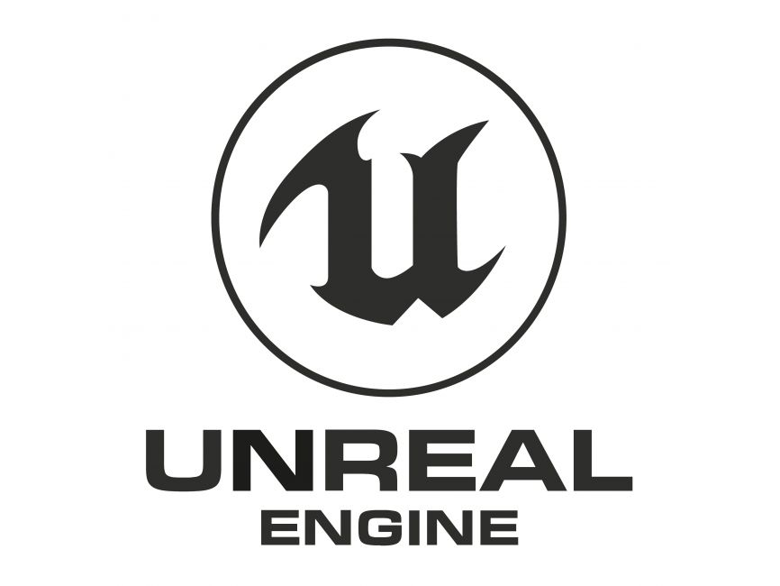
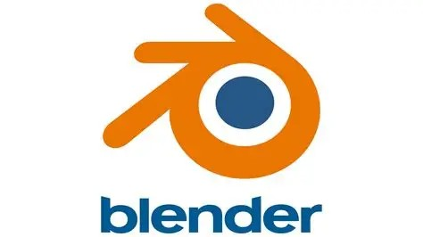
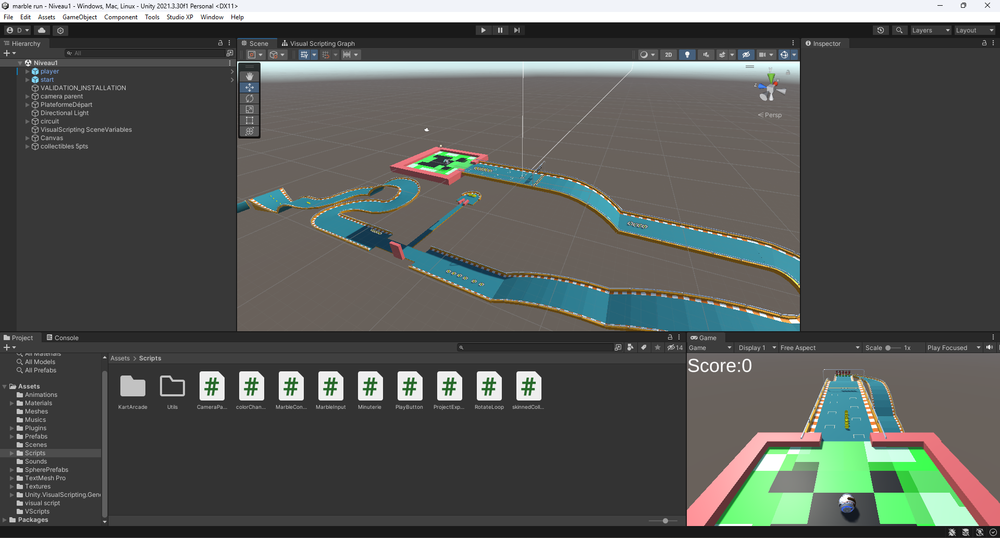
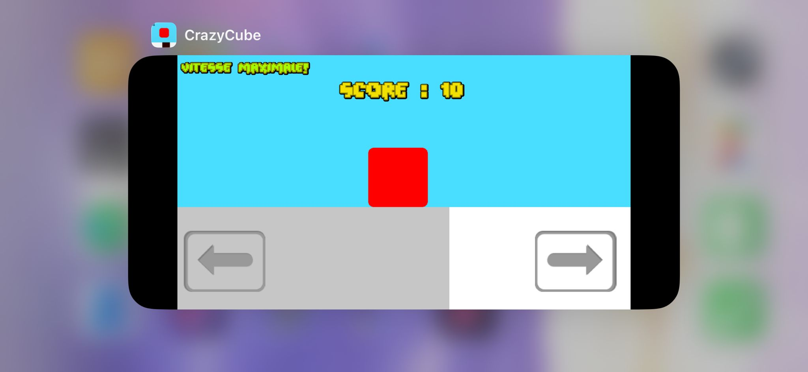
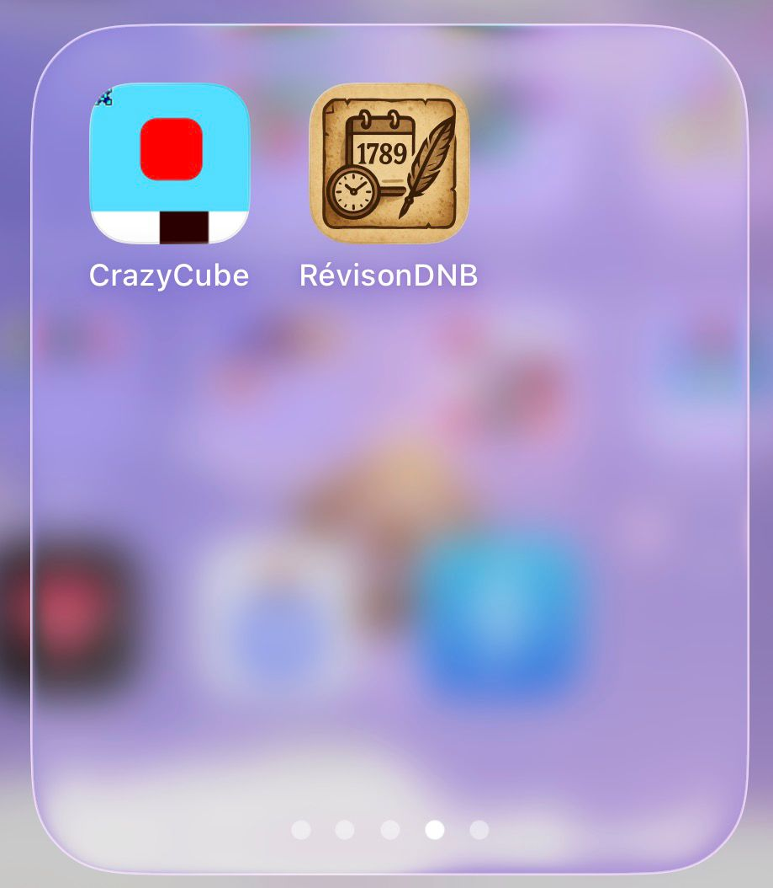
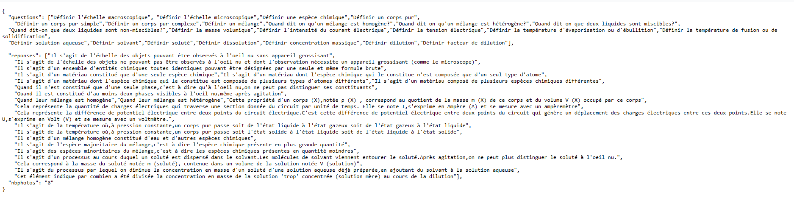

J'ai toujours aimé créer des choses et, étant donné que les
jeux vidéos sont l'une de mes passions, je me suis demandé comment en créer.
J'ai commencé à me poser cette question quand j'étais en CM1 à peu près.
Je ne le savais pas encore mais j'allais bientôt découvrir une nouvelle passion...
J'avais déjà fait du Scratch avant mais j'étais sûr que je ne pourrai jamais faire grand chose
avec quelque chose d'aussi limité. J'ai cherché un peu et ai trouvé un logiciel qui me paraissait convenir.
Je ne sais pas pourquoi mais au lieu de télécharger un logiciel de codage ou un game engine,
j'ai téléchargé un logiciel de modélisation 3D, Blender.

Logo de blender
Je me suis un peu entrainé dessus et j'ai atteint un assez bon niveau mais j'ai aussi compris que ce n'est pas comme ca que je créerai un jeu. Je me suis tourné tout d'abord vers Unreal Engine, qui est difficile à comprendre ET à faire tourner sur un pc. J'ai aussi essayé Unity mais je n'avais pas encore d'assez bonnes bases en codage.

Logos de unity et de unreal engine
J'ai donc installé un éditeur Python et ai pris des cours quand je pouvais et sinon je regardais des vidéos YouTube dans le but d'apprendre les bases du codage. En effet, Python est connu pour être le meilleur langage pour débuter et apprendre les bases.

Logo de python
Il permet surtout de faire de la logique et est beaucoup moins axé sur la partie graphique, ce qui évite trop d'informations superflues qui peuvent perdre les débutants. Après quelques mois d'entrainement au codage sur Python, j'ai découvert un add-on qui venait de sortir sur Blender, Armory 3D. Il y avait maintenant la possibilité de créer des jeux vidéos en visual scripting! Pour faire simple,le visual scripting est un langage de code graphique,on relie des boites entre elles pour créer du code,chaque boite représente un bout de code.

Visual scripting sur blender
L'avantage du visual scripting est qu'il est facile à comprendre et qu'il est beaucoup moins
limité que Scratch. Je n'ai pas fait grand chose en visual scripting sur Blender,si ce
n'est un commencement de jeu en première personne où le joueur doit s'échapper d'un labyrinthe.
Pendant les grandes vacances de 2024,je m'inscris à un stage de codage ou cette fois,pour mon plus
grand bonheur,je découvre que le visual scripting existe aussi sur Unity,qui est un moteur
de jeu alors que Blender est un logiciel de modélisation 3D. Pendant ce stage je crée sans problème
un petit jeu mais je ne le considère pas comme quelque chose dont je peux être vraiment fier
car tous les modèles 3d m'étaient donnés à l'avance et je devais seulement suivre des instructions
pour le code. Mais après le stage,je resort mon projet de jeu où le joueur doit sortir d'un labyrinthe
et le continue,cette fois sur Unity où le visual Scripting est beaucoup plus poussé que sur Blender.
j'avance un peu mais arrête très vite par manque d'inspiration.
 |  |
|---|
Aperçus du jeu codé pendant le stage
 |  |
|---|
Aperçus de mon jeu avec le labyrinthe
Pendant environ 5 mois je ne fait pas beaucoup de code,si ce n'est un stage en décembre d'une semaine de python ou je réapprend les bases. Mais un élément viendra changer la donne en avril. Cette année était en effet mon année de troisième et qui dit année de troisième dit Brevet… Et quelques jours avant le deuxième brevet blanc,en février, je me rend compte que je déteste apprendre les dates d'histoire geo. Et comme faut croire que j'avais bien mieux à faire de ma vie que de réviser le brevet blanc(😅), je décide de créer un programme qui me permet de réviser toutes les dates. Je code la logique en moins d'une heure mais passe plusieurs jours sur la partie graphique. Python n'est vraiment pas fait pour ça… À cause de ce léger contretemps je finirai le programme quelques jours après le brevet blanc. Mais ce n'était pas inutile car le coder m'a permis d'apprendre les dates et surtout,le programme m'aura servi pour le vrai brevet!

Aperçu de mon programme pour les révisions du brevet
Après le brevet,alors que les grandes vacances venaient de commencer,je fais une semaine de stage dans le même endroit que en décembre. Ce qui est bien avec cette endroit,c'est que les cours se font par groupe de 2 ou 3.Et pendant cette semaine de stage,je suis seulement avec une seule personne. J'avais le même prof que la fois d'avant et il se souvenait encore que j'avais d'assez bonnes bases. Il ne voulait pas que je refasse la meme chose que la fois d'avant,il décide donc de m'aider à créer un vrai jeu moi même. Et ça tombait bien car j'avais une idée d'un petit jeu que je pourrai faire.Grâce à son aide,pendant cette semaine,je découvre un super game engine,godot,apprend les bases du gdscript,qui est comme du python mais adapté au game engine,et créée mon propre jeu. Le but du jeu est de ne pas toucher des plateformes qui noircissent et de faire le meilleur score. Pour remercier ce professeur et l'institution qui avait organisé ce stage j'ai ajouté un skin avec leur logo :)

Aperçu du jeu créé pendant le stage, crazycube
Après ce stage je met ce jeu sur itch.io (le lien vers la page itch.io: https://lord-retrace.itch.io/crazy-cube ) ,qui est une sorte de réseau social pour tous les développeurs en herbe et j'apprend une méthode d'export qui je pense est la meilleure pour les petits jeux. Je les exporte en progressive web app .Une Progressive Web App (PWA) est un site web conçu pour offrir la même expérience qu’une application native.On peut l’ajouter à l’écran d’accueil : une icône apparaît, et quand on l’ouvre, elle se lance comme une vraie app, dans sa propre fenêtre. Ce n’est pas seulement un raccourci vers un site web : une PWA peut aussi fonctionner hors ligne, envoyer des notifications et enregistrer des données localement, selon l’appareil et le navigateur. Voici le site avec l'export en pwa de mon jeu: CrazyCube
 |  |
|---|
crazy cube en pwa installé sur appareil mobile
J'ai aussi fait un export en pwa de mon programme avec les dates du brevet à cette adresse: RévisionDNB. Après tout ça,nous arrivons maintetant à mon année de seconde en cours. J'ai assez vite découvert que ma professeure de physique chimie faisait des contrôles de cours toutes les semaines et que ceux-ci demandaient de connaitre beaucoup de définitions. C'est ainsi que m'est venue l'idée de créer une application pour toutes les réviser quand j'en ai envie. Je la considère aujourd'hui comme mon app la plus aboutie au niveau de l'expérience utilisateur car j'ai fait un système qui synchronise les définitions depuis un dépôt github. Enfait,j'ai un serveur sur le site gitHub.com qui contient une liste de toutes les définitions et connaissances,donc à chaque fois que une nouvelle définition ou connaissance est donnée en cours,je la rajoute sur la liste et elle est automatiquement synchronisée!
 |
|---|
Les listes des définitions et des connaissances, synchronisée depuis github sur tous les appareils
Vous pouvez trouver mon app sur ce site : Révision Physique-Chimie. Il n'y a pour l'instant aucun graphismes par manque de temps mais peut etre que un jour je les rajouterai? J'ai quand même partagé cette app avec ma classe dans le but de les aider et à l'avenir. J'espère pouvoir encore me rendre utile via des programmes informatiques!